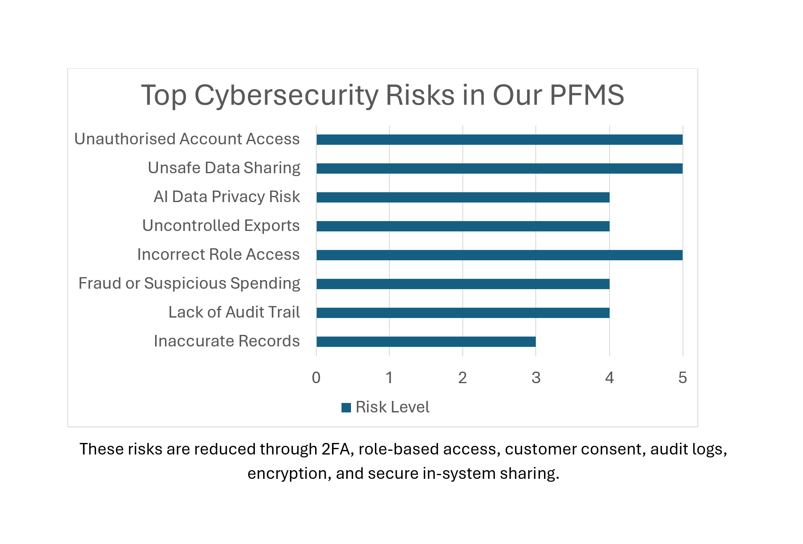
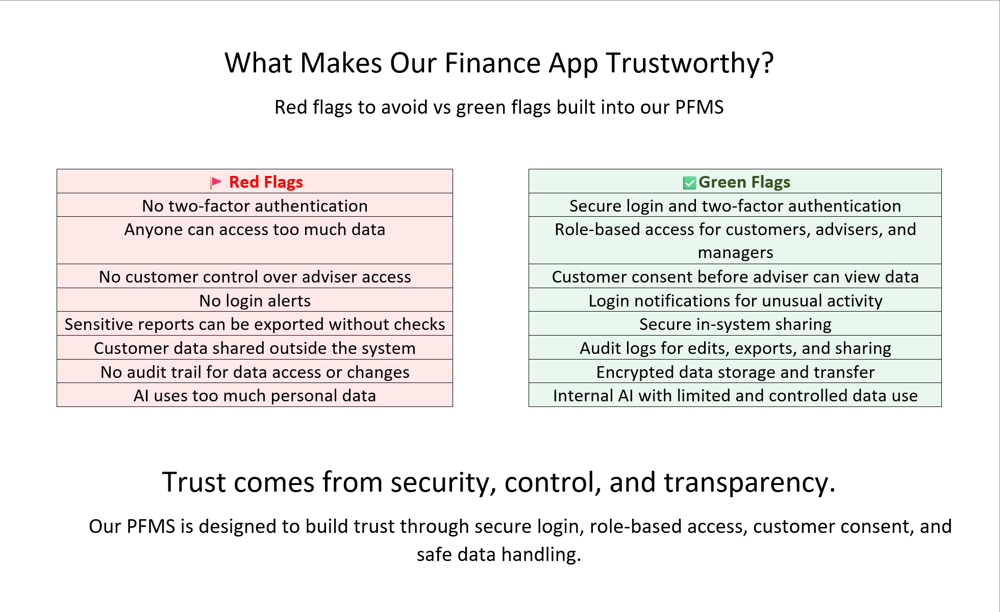
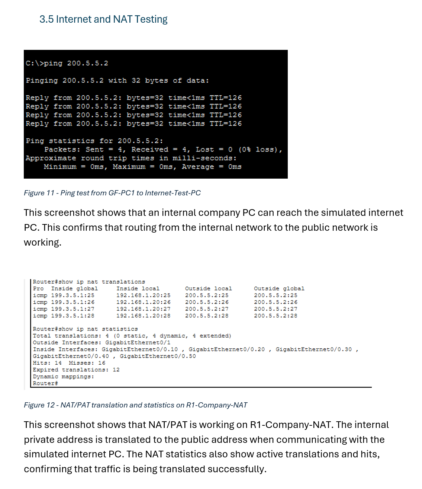
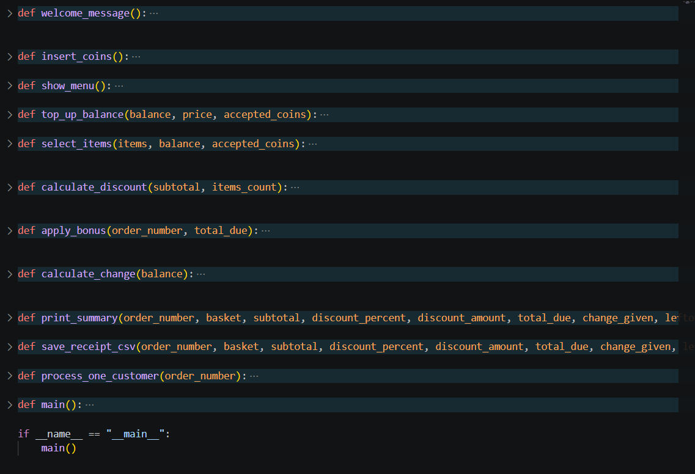
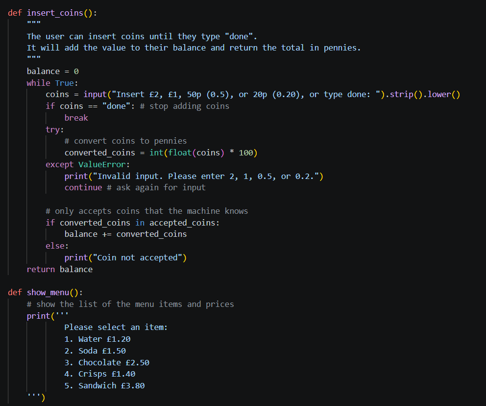
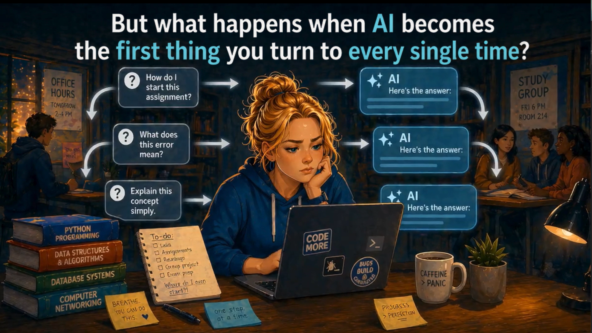
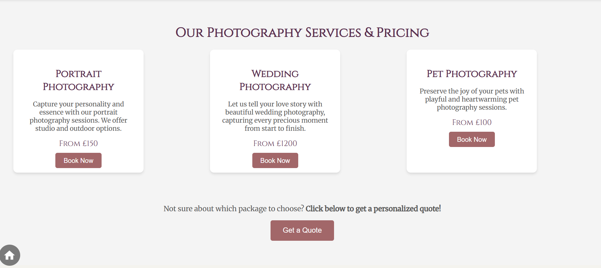
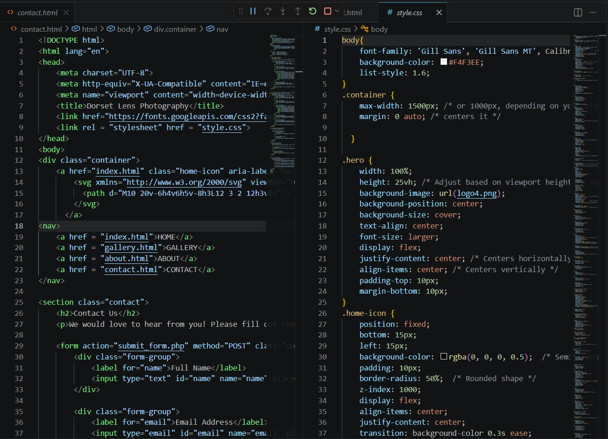

A closer look at my university and coursework projects so far.
University group project · Cybersecurity Lead · Industry brief
DWK Personal Finance Management System - Cybersecurity Analysis
This group project was based on an industry brief from J.P. Morgan representatives in Bournemouth, where we designed a fictional personal finance management system. As Cybersecurity Lead, I looked at how sensitive customer and financial data could be protected, considering risks like unauthorised access, incorrect permissions and unsafe data sharing, and possible controls such as two-factor authentication, role-based access and encryption.
What I worked on: My part of the group project focused on identifying where customer and financial data could be exposed or misused and linking those risks to practical security controls.
Cybersecurity analysisRisk identificationPrivacy & data protectionAccess controlStakeholder communicationTeamwork

Overview of the main cybersecurity risks identified during the project.

Security design poster showing key risks to avoid and the controls considered for the proposed finance system.
University coursework · Network Essentials
Network Design with Security Analysis
I designed and tested a network using Cisco Packet Tracer for my first-year Network Essentials unit, covering subnetting, VLANs, trunking, DHCP, wireless and routing. I also looked at some security weaknesses in the design and suggested ways they could be reduced.
What I worked on: I created separate network segments, configured the required addressing and network services, and tested the setup to check that devices could communicate internally and through the simulated internet connection.
Cisco Packet Tracer network topology showing segmented networks, server infrastructure, wireless access points, routing and external connectivity.

Connectivity and NAT/PAT testing showing successful communication between the internal network and the simulated internet.
University coursework · Programming
Python Vending Machine Application
I created a Python program that lets a user select and buy products from a simulated vending machine, handling stock levels, coin input, discounts, change and purchase records. This helped me practise breaking a task into functions and get more confident with loops, conditions, dictionaries and input validation.
What I worked on: I divided the program into separate functions for tasks such as accepting coins, displaying products, selecting items, calculating discounts, returning change and saving receipt data. This helped me practise organising a larger Python program into smaller parts.
Python vending machine in use, showing product selection, balance handling, purchase flow and the final purchase summary.

Overview of the program structure, showing the main functions used to manage payments, purchases, discounts, change and receipt data.

Example Python code handling coin input, validation and menu display.
University coursework · Research & Digital Artefact
Computing & Society — AI, Communication and Collaboration
I looked at how generative AI can affect communication and collaboration among first-year students, using academic and sector research to weigh up the benefits and the risks, including over-reliance on AI and issues around fairness and misinformation. I then used this research to create a short digital artefact encouraging students to use AI as a support tool rather than a replacement for talking to people.
Key findings from my research, showing both the benefits of AI support and some of the risks of over-reliance.

Frame from my digital artefact exploring what can happen when AI becomes a student's first source of help every time.
Access to Higher Education · Web Design
Access to HE Website
I designed and built a multi-page photography website with HTML and CSS during my Access to Higher Education course, including navigation, image galleries, a pricing section and a contact form. This was one of my first bigger web projects and gave me the foundation I later used to build this portfolio site.
Gallery page showing separate portrait, wedding and pet photography sections.

Service and pricing layout created using reusable content cards.

Example of the HTML and CSS used to build and style the website.
More cyber security, digital forensics and coding projects will be added here as I complete them.
Get in touch
I'm interested in placement, junior technology, cyber security, digital support and related opportunities where I can continue developing my technical skills and gain practical experience.